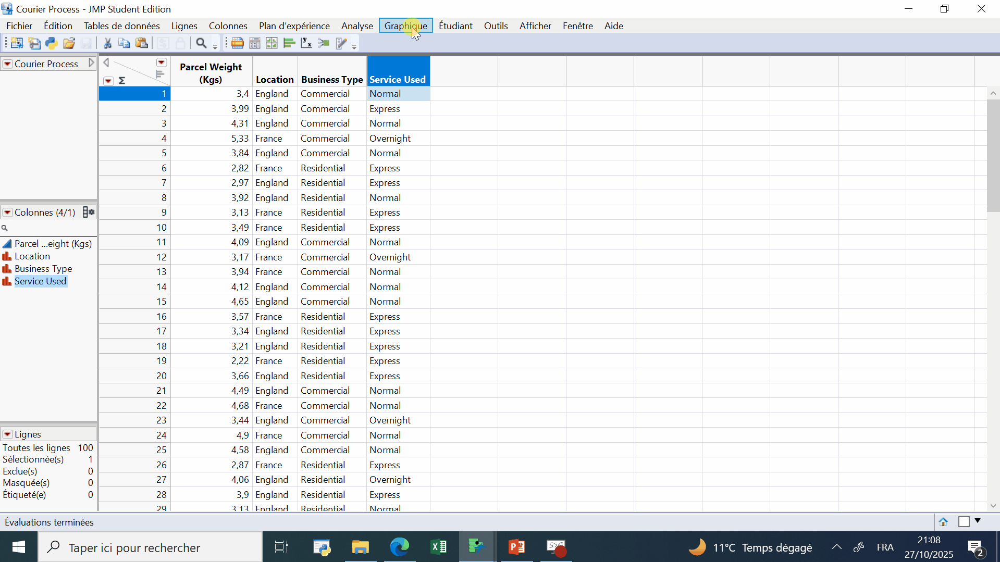

Procédure 10 · Graphiques
Diagramme à points (Dot plot)
Procédure pas à pas
Le support ne fournit pas assez d’étapes vérifiables pour cette procédure. Elle reste référencée, mais n’est pas inventée.
Jeu de données / résultat
Fichier cité : Courier Process.xls
Point de vigilance : Le support présente le principe et le résultat, mais ne fournit pas de chemin de menus complet. Procédure à compléter après validation dans JMP 19 Student.
Démonstrations animées dans JMP
Animations extraites du PowerPoint « Lean Six Sigma avec JMP 003 ». Elles complètent les étapes numérotées ci-dessus.
